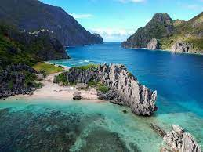
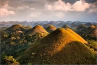
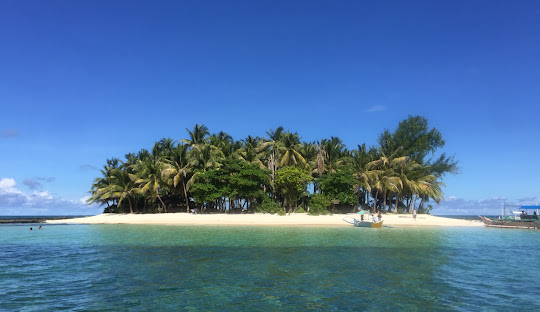

SAY YES
TO YOUR
NEXT VACATION!

PUERTO PRINCESA PALAWAN
PUERTO PRINCESA is a coastal city on Palawan Island in the western Philippines. It's a base for boat trips through the massive limestone caves and underground river of the biodiverse Puerto Princesa Subterranean River National Park.

CHOCOLATE HILLS
CHOCCOLATE HILLS are a geological formation in the Bohol province of the Philippines. There are at least 1,260 hills, but there may be as many as 1,776 hills spread over an area of more than 50 square kilometers. They are covered in green grass that turns brown during the dry season, hence the name.

SIARGAO ISLAND
is a tear-drop shaped island in the Philippine Sea situated 196 kilometers southeast of Tacloban.